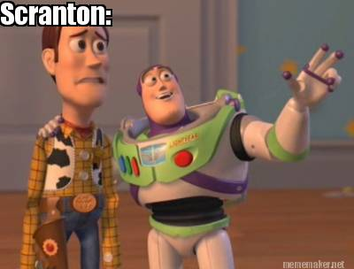

Human Geography in Websites
It’s been said that if your problem doesn’t involve geography, it’s not a problem. It is related to everything from what foods people eat to what languages they speak. So, it should not come as too big a surprise that human geography is inseparably intertwined with the modern internet. The standard conventions of the internet, such as windows, urls, etcetera, are all standardized as a result of various forms of cultural diffusion. Internet fads, from likes to memes, are controlled by human geography. Human geography has created the very standards by which websites to visit and which products to buy from online shopping websites. Because the internet is almost entirely an abstract object, it is appropriate to say that human geography shapes it.
Standard Internet Conventions
Much of the computer development of the 20th century, when the internet first began to gain popularity, was done in English speaking countries. Consequently, the programming languages used to create websites are largely English-based. For instance, if I were to create an alert box with javascript, I would write “alert(“Hello, world.”);.” A Frenchman would write “alert(“Bonjour, le monde”);.” Though the content of the alert box changes, the code itself is still in English. This is not true for all programming languages. However, a significant number are English only.
Style
It’s fairly obvious that human popular culture shapes the content of the internet. Memes, likes, snaps, and even most modern slang was created by popular internet users and then, through the process of hierarchical diffusion, spread throughout the internet. The internet is also home to a considerable amount of folk culture. For example, there is a folk internet trend in which people use memes to mock Scranton’s economic decline in the past eighty years.
Like any form of folk culture, internet folk culture might become popular culture. For instance, if [insert any celebrity ever here] tweeted the above meme, it might become suddenly popular to make fun of Scranton.
A less obvious example of how human geography controls the internet is domain names, or URLs. Thanks to several recent online multiplayer games, it is becoming increasingly popular to use the suffix .io at the end of a new website’s url as opposed to .com. What makes .io sites so much better than .com sites? Absolutely nothing. If the creator of Agar.io suddenly changed the url to Agar.com, his game would not change at all. A rose by any other name is just as sweet. That doesn’t stop online domain stores from upping the charge on .io domain names. Take a look at this Google Domains price list for the domain name “aphugisawesome” as of January 2017:
In accordance with the law of supply and demand, sellers can increase the price of .io domain names even though they require no additional work to create than .com domains.
Website Standards Manipulate You
Believe it or not, the conventions and styles found across the internet shape how you use the internet. For example, suppose you wanted to buy cheap Bluegrass music, and you followed a link online to this website: